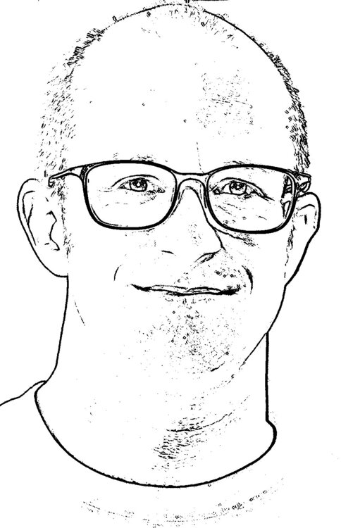

About Me
I’m Michael, from New Zealand, living in Tokyo. I have a wife and three kids and we have a family New Years’s card at ake-ome.com.
I’m currently the Japan Country Manager for Engage Squared, and I previously co-founded Neural Squared though I am not (or at least I hope I am not) square nor squared.
I started a compamy Hypotize a long time ago and keep it around just in case I have any more great money losing ideas like selling t-shirts.
On the weekends, along with a couple of other volunteers, I run the Miura Computer Club, teaching kids in Miura City, Kanagawa a little about computers.
I look a little like this, tho on most days with a little more color and more chin definition:

I’ve lived in Tokyo (and Kanagawa) for over 20 years, and speak pretty good Japanese and English. I studied computer science at the University of Electro-Communications.